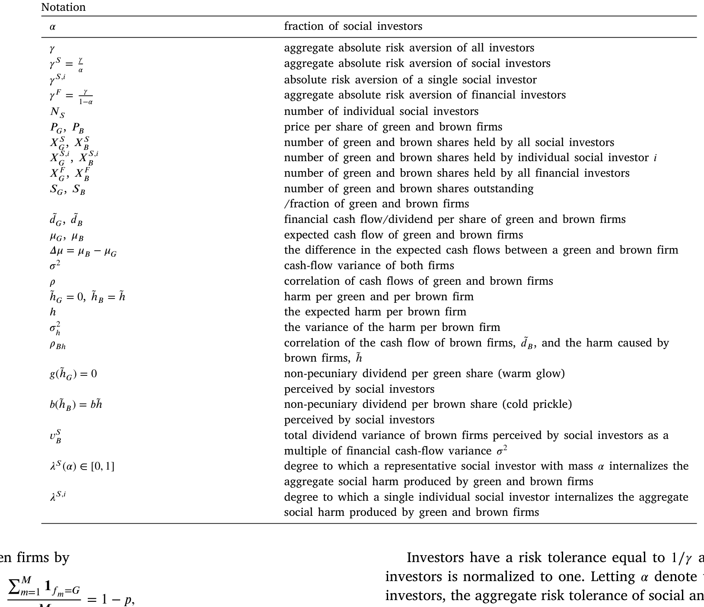
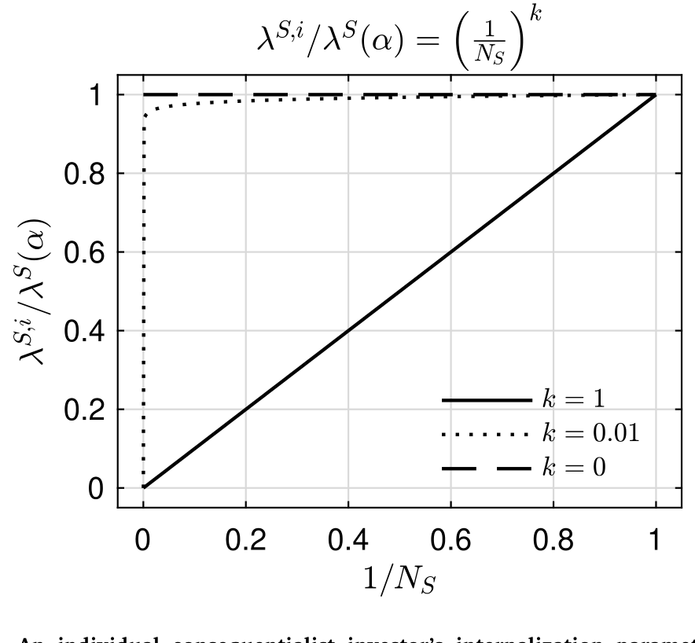
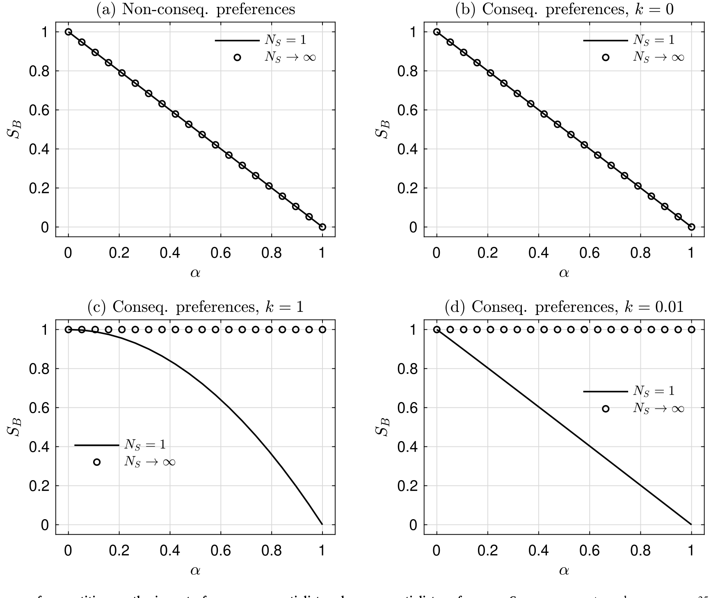
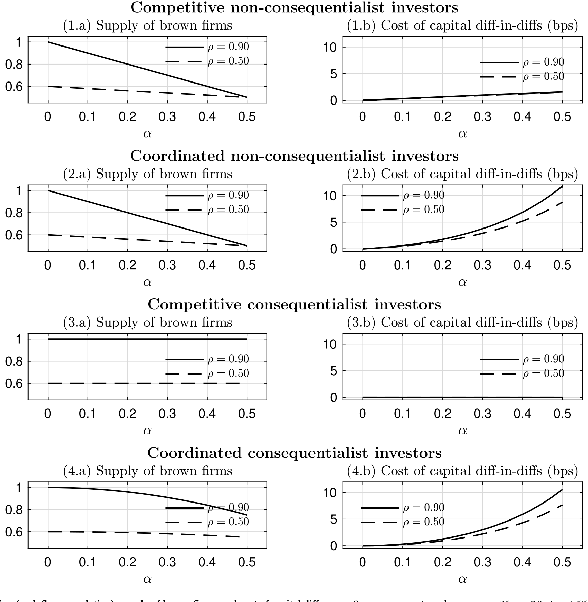
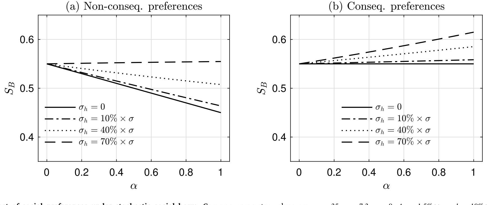
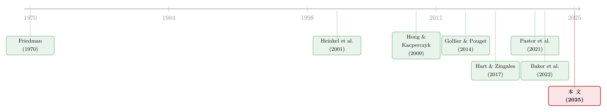

良心能改变公司吗？——社会偏好、协调，与那场可能走反的「绿色转型」
本文读的是 Dangl, Halling, Yu & Zechner (2025, Journal of Financial Economics)：作者搭了一个统一的理论框架，把市面上各种「社会偏好」分成三类，结果发现一个反直觉的事实——只在意「后果」的投资者，如果各自为战、谁也不联手，其实对公司的技术选择毫无影响；而只在意「自己别脏了手」的投资者，无论联不联手都管用。更扎心的是：当污染带来的社会损害本身是随机的、还和棕色企业的现金流正相关时，棕色企业反而成了社会投资者眼里的「避险资产」，于是良心非但没能推动绿色转型，反而可能亲手推动一场「棕色转型」。
1 一个让人不安的问题
先讲个场景。
你是一只有良心的基金，决心为气候出一份力。摆在面前有两条路：第一条，把手里所有「棕色」（高排放）公司的股票统统卖掉，只留「绿色」公司——干干净净，问心无愧；第二条，联合一批同道，组成一个有声量的「影响力基金」，去逼那些公司真的改变技术。
直觉上，这两条路都是在做好事。可万一我告诉你：第一条路也许真的能改变公司的技术选择，而第二条路——如果你只是一个微不足道的小投资者、又没人跟你联手——很可能一点用都没有，你会不会觉得哪里不对劲？
这正是这篇论文要讲的故事。它的核心，其实就一句话：
你的良心到底能不能改变一家公司，关键不在于你「有多在乎」，而在于你在乎的是哪一种东西，以及你有没有人跟你协调。
围绕这一句话，作者把近十年「社会偏好与公司金融」这条线上散落各处的模型，第一次装进了同一个框架里，然后逐一拆解每一种偏好「到底通过什么经济量发挥作用」。下面我们就顺着这条线，一步步走过去。
2 三种「良心」：把散落的偏好装进一个框架
首先要解决的，是一个分类问题。现有文献里「社会偏好」这个词被用得很乱，不同的论文其实在说完全不同的东西。作者把它们干净地切成三类：
-
义务论偏好（deontological preferences）：投资者认为持有棕色股票这件事本身就是「错」的，于是干脆不碰，即
X_B^S = 0。这接近康德的「绝对命令」——对错只看行为本身，不看后果。早期的 Heinkel, Kraus & Zechner (2001) 和 Hong & Kacperczyk (2009) 研究的「排除型」投资就是这一类。 -
非后果论偏好（non-consequentialist preferences）：投资者从「持有」这件事里直接获得效用或负效用——持有绿色股票有一种「暖光（warm glow）」，持有棕色股票有一种「冷刺（cold prickle）」。注意，他只在乎自己手里拿了什么，不在乎全社会一共生产了多少棕色产能。Pastor et al. (2021)、Pedersen et al. (2021) 这一脉属于此类。
-
后果论偏好（consequentialist preferences）：投资者内部化（internalize）了自己的投资决策对全社会后果（比如总碳排放）的影响。他在乎的不是「我拿了几股」，而是「因为我这么投，世界一共多排了多少」。Hart & Zingales (2017)、Broccardo et al. (2022)、Oehmke & Opp (2024) 这一脉属于此类。

Table 1
接着，作者把这三类偏好统一写进社会投资者的「非货币损失函数」L(·)。模型是个标准的两期、CARA（常绝对风险厌恶）设定：一部分投资者（占比 1−α）只关心财富，叫金融投资者；另一部分（占比 α）是社会投资者，他们的最终消费要从财富里扣掉一块良心的代价：
$$\tilde{C}^F = \tilde{W}^F, \qquad \tilde{C}^S = \tilde{W}^S - L(\tilde{h}_G, \tilde{h}_B, X_G^S, X_B^S, S_B)$$
这里 h̃_G、h̃_B 是绿色、棕色企业造成的社会损害，X_G^S、X_B^S 是社会投资者持有的绿色、棕色股数，S_B 是全社会棕色企业的供给比例。
为了把话说清楚，作者做了几步无伤大雅的归一化：把绿色技术的损害 h̃_G 归零、把「暖光」g(h̃_G) 归零，再令「冷刺」是线性的 b(h̃) = b·h̃（b > 0）。于是整个框架收敛成一个极其干净、也是全文的「核心方程」：
请盯着这个方程多看一眼，因为后面所有的「反转」都藏在这两项的结构差异里：左边那项挂在 X_B^S（我的持仓）上，右边那项挂在 S_B（全社会的供给）上。一个是「私事」，一个是「公事」。看似只是写法不同，可一旦放进竞争性均衡里，它们的命运就彻底分岔了。
顺带一提：作者证明了义务论偏好其实是非后果论偏好的一个特例——当「冷刺」b 大到一定程度、又禁止卖空时，社会投资者本来就想做空棕色股票，被卖空约束顶住后，最优持仓恰好是 X_B^S = 0。所以全文只需认真处理「非后果论」和「后果论」这两类。
3 企业这一端：供给是怎么内生出来的
光有投资者还不够，得有人「供给」绿色和棕色技术。作者让企业这一端也活了起来。
企业是竞争性的，编号 m = 1, …, M（M → ∞），每家质量 1/M，事前完全相同。它们在 t = 0 选技术：要么绿色 G，要么棕色 B。经理的目标是最大化股价。给定棕色供给 S_B，经理能正确预期到对应的均衡股价 P_G(S_B)、P_B(S_B)，于是每家的最优选择是：
$$f_m = \begin{cases} G, & P_G(S_B) > P_B(S_B);\\[2pt] G \text{ or } B, & P_G(S_B) = P_B(S_B);\\[2pt] B, & P_G(S_B) < P_B(S_B). \end{cases}$$
这里有个关键的均衡逻辑：如果两种技术都要有正的供给，价值最大化的经理就必须面对 P_G = P_B ≡ P——否则大家都会一窝蜂涌向贵的那一种。于是在内部解里，每家企业玩一个混合策略，以概率 p 选棕色，由大数定律：
$$\lim_{M\to\infty} S_B = \lim_{M\to\infty}\frac{\sum_{m=1}^M \mathbf{1}_{f_m=B}}{M} = p$$
换句话说，棕色供给 S_B 是被股价之差「钉」住的内生量。社会投资者要想改变现实世界（改变 S_B），唯一的途径，就是通过自己的需求去撬动 P_G − P_B 这个价差。记住这一点——社会偏好的「真实效应」，最终都要翻译成对这个价差的扰动。
4 真正关键的一步：协调，决定了谁有用、谁没用
现在，最精彩的部分来了。
我们来看后果论投资者。他的良心损失是 λ^S(α)·h̃·S_B。当他做组合选择、在边际上权衡时，他要算的是「我多买一股，会让 S_B 变多少」。写成边际条件：
$$\frac{dL}{dX_G^S} = \lambda^S(\alpha)\big[\tilde{h}_B - \tilde{h}_G\big]\frac{dS_B}{dX_G^S}, \qquad \frac{dL}{dX_B^S} = \lambda^S(\alpha)\big[\tilde{h}_B - \tilde{h}_G\big]\frac{dS_B}{dX_B^S}$$
问题就出在 dS_B/dX。一个原子化的竞争者——质量 α → 0 的小投资者——他改变自己的持仓，对全社会的 S_B 影响趋于零。于是上面这个边际损失整个塌缩成零。结果就是：他根本不会因为「良心」而对组合做任何倾斜。后果论偏好在竞争性均衡里，对真实产出毫无影响。
但如果这群后果论投资者联合起来，成立一个有质量的战略性基金，情况就完全不同了：这个基金知道自己的需求能撬动 S_B，dS_B/dX 不再是零，于是良心终于「咬」住了价差，产生真实效应。

Figure 1: An individual consequentialist investor’s internalization parameter for
这里有个微妙的边界条件值得点出来：上述「竞争即失效」的结论，成立的前提是单个投资者内部化的损害比例 λ^S(α) 会随其质量下降而下降（如图 1 所示，质量趋于零时内部化参数衰减）。只有在一种极端情形下例外——每个小投资者都像「代表性投资者」那样，内部化与自己质量无关的、同样大的一份总损害。那是一种心理上的「不可分责任感」，现实中很罕见。
反过来看非后果论投资者。他的良心损失是 b·h̃·X_B^S，边际条件是 dL/dX_B^S = b·h̃——每股一个常数，跟全社会供给、跟他是大是小、跟他联不联手，统统无关。所以他的组合倾斜稳稳地存在。其真实效应由一个加总的内部化损害度量决定，而不是由单个投资者的质量决定。换句话说：
非后果论偏好，无论投资者是竞争性的价格接受者，还是一个联合起来的战略性投资者，对技术供给的影响完全一样。协调与否，无关紧要。

Figure 2: The influence of competition on the impact of non-consequentialist and consequentialist preferences. Common parameter values are 𝜇 =35, 𝜎=7
如图 2 所示，作者把「竞争程度」对两类偏好的影响并排画了出来：随着投资者越来越原子化、越来越竞争，后果论偏好的真实效应一路衰减到零，而非后果论偏好的效应纹丝不动。
这个对比，给了资管业一个全新的解读视角。现实中，我们看到「协同尽责（coordinated engagement）」这类平台兴起——比如联合国支持的 PRI，专门帮投资者联手向公司施压。论文的逻辑解释了为什么：这类平台天然服务于后果论的影响力基金（它们必须协调才有用）；而对那些跑「被动排除策略」的非后果论基金，市面上从来没有出现过类似的协调平台——因为它们根本不需要。
（关于「加总持仓」这个度量在现实中到底有多大，可参见《三万五千亿美元的 ESG，到底「倾斜」了多少？》；关于「联手施压」这条路径在治理上的代价，则可参见《良心、价格与监督：可持续投资如何悄悄抬高了治理成本》。）
5 第二个反转：相关性越高，良心反而越有用
接着，一个自然的问题是：什么时候社会投资者的影响最大？
传统直觉是这样的：如果绿色和棕色公司的现金流高度相关，那么社会投资者把钱从棕色挪到绿色，金融投资者反手就能加仓棕色、轻松「对冲」掉这份倾斜——所以高相关时，社会投资者应该没什么影响才对。
论文说，这个直觉漏掉了一个反方向的、更强的机制。
它的核心是：当现金流高度相关时，绿色和棕色在金融上几乎可以互相替代，于是技术供给对社会投资者份额的变化变得极有弹性。一点点需求的倾斜，就能让大量企业在 G 和 B 之间切换。这份「供给弹性」放大了真实效应，盖过了「金融投资者对冲」的削弱作用。

Figure 4: Risk sharing (cash-flow correlation), supply of brown firms, and cost-of-capital difference. Common parameter values are 𝜇 𝐵=35, 𝜎=7.3, 𝛥𝜇=1
结论于是反转：当绿色和棕色现金流高度相关时，社会投资者反而最有效。同理，当企业现金流波动率更低、或投资者风险厌恶更低时——也就是「风险分担」这件事本身越不重要时——所有类型的社会偏好真实效应都更强。
图 4 把这件事和第三个发现一起画了出来：现金流相关性、棕色企业供给、以及绿色与棕色之间的资本成本之差。这第三个发现同样值得敲黑板——资本成本之差，几乎读不出真实效应。原因是企业的供给调整会在很大程度上「中和」掉社会偏好对资本成本差异的影响。所以，那些试图用「绿棕资本成本之差」来推断 ESG 是否真的改变了实体经济的实证研究，恐怕测到的是一个被供给反应抹平了的、严重失真的信号。
（这一点和《绿色溢价真的归零了吗？——藏在德国孪生国债里的两种「便利收益」》的隐忧遥相呼应：价格上的「绿色溢价」很容易被各种力量推回零，并不能简单等同于实体层面的改变。）
6 最后的反转：当损害是随机的，良心可能走反
到这里，故事已经足够丰富了。但论文还留了最狠的一击。
前面我们一直假设社会损害 h̃ 是确定的。可现实里，气候损害、监管冲击、碳价波动……都是随机的。于是真正关键的一步在于：把损害写成随机变量，再问一句——它和棕色企业的现金流相关吗？
答案是反直觉的。当损害 h̃ 与棕色企业现金流的相关性足够高时，棕色股票就成了对「损害」这件坏事的一个天然对冲——损害大的时候，棕色企业现金流也高。于是在社会投资者眼里，棕色企业反而变得「不那么有风险」了。这个机制，最早由 Baker et al. (2022) 在后果论投资者的语境下指出。

Figure 6: The impact of social preferences under stochastic social harm. Common parameter values are 𝜇 =35, 𝜎=7.3, 𝜌=0, 𝛥𝜇=1.5%×𝜇 𝐵, ℎ=10%×𝜇 𝐵, 𝛾=0.1
如图 6 所示，这个对冲效应的后果，取决于偏好的类型和强度：
-
对非后果论投资者：如果在确定性情形下他们本来就持有棕色多头，那么损害变随机后，他们会进一步加多棕色，从而拖慢绿色转型；反过来，如果冷刺
b足够强、本来就在做空棕色，那么这份对冲反而让他们加大空头，支持绿色转型。方向取决于初始持仓的正负。 -
对后果论投资者：这个机制始终导致他们增持棕色多头，从而一致地、顽固地阻碍绿色转型。
最让人不安的结论是后半句：竞争性的后果论偏好，不只是「无效」那么简单——在随机损害下，它甚至会引发一场棕色转型（brown transition），让棕色企业的供给比一个完全没有社会投资者的世界还要多。良心，在这里把车开向了反方向。
这给政策制定者留了一个抓手：既然「损害与棕色现金流的相关性」是关键开关，那么压低这个相关性，就能帮助绿色转型。比如，要求企业在毛收入超过某阈值后购买昂贵的碳证书——这会切断「损害」与「股东现金流」之间的正相关，让对冲机制失效。
7 文献脉络
把这条线捋一捋，会看到一段相当清晰的演进。
故事的起点是 Friedman (1970) 那篇著名的《纽约时报》文章：企业的唯一社会责任就是赚钱，伦理归伦理、投资归投资，两者可以分离。很长一段时间，这是主流。但 Hart & Zingales (2017) 给出了有力的反驳：股东的非财务目标和组合决策无法被干净地分开，公司应当最大化的是「股东福利」而非单纯的市值。这一脚，把社会偏好正式踢进了公司金融的核心议程。

接着，文献沿着「怎么给社会偏好建模」分了岔。一支走义务论/排除路线：Heinkel, Kraus & Zechner (2001)、Hong & Kacperczyk (2009)——不碰「罪恶股票」，并由此产生价格效应。另一支走非后果论路线：Gollier & Pouget (2014)、Pastor et al. (2021)、Pedersen et al. (2021)——把持有本身写进效用，得到 ESG 有效前沿。第三支走后果论路线：投资者在乎自己的钱到底改变了什么。与此并行，一大批实证、调查与实验研究在追问这些偏好到底有多普遍——Riedl & Smeets (2017) 发现社会责任投资者愿意为绿色基金付更高的费、还预期它跑输；而 Cole et al. (2023) 估计风投领域只有约 12% 的投资者是真正的后果论者。
这篇论文（2025）的位置，就在这三支的汇流处：它不是再提出一种新的偏好，而是搭一个统一的框架，把它们装进同一个损失函数，然后追问一个此前没人系统回答过的问题——这些偏好分别通过哪个经济量起作用、对协调的依赖有何不同、又如何在随机损害下走向不同的结局。它和 Baker et al. (2022) 关于「随机损害下棕色变避险」的洞见接上了头，并把它推广到了非后果论的世界。
8 评论与延伸（Q&A + 研究方向）
(a) 几个可能的疑问
Q：「后果论偏好在竞争下失效」这个结论，是不是太强了，强到不真实？
它确实强，但作者把它的边界划得很清楚：失效的前提是「单个投资者内部化的损害比例
λ^S(α)随其质量下降而下降」。这其实就是经典的「群体规模不敏感」问题（参见 Schumacher et al., 2017）的一个体现——你越微小，你越难相信「我这一股」真的改变了世界。只有当每个小投资者都像代表性投资者一样、扛起与自身规模无关的整份责任时，竞争性后果论才有效。所以这不是一个数学伎俩，而是一个关于「责任感如何随规模缩水」的实质假设。
Q：非后果论和后果论，听起来都是「在乎环境」，差别真有这么大吗？
差别不在「在乎什么」，而在「在乎挂在哪个变量上」。非后果论挂在自己的持仓
X_B^S上（私事），后果论挂在全社会供给S_B上（公事）。私事的边际效应是每股一个常数，加总后稳稳存在；公事的边际效应要靠「我能撬动S_B」，而原子化的小投资者撬不动。一字之差，命运两分。
Q：为什么「现金流高度相关 → 社会投资者更有效」反而成立？这和『金融投资者能对冲』不矛盾吗？
两个机制同时存在，论文说后者（供给弹性）更强。高相关意味着绿棕在金融上几近可替代，于是技术供给对需求倾斜极度敏感——一点点倾斜就能让大批企业切换技术。金融投资者的「对冲」削弱了价格信号，但被放大了的供给弹性盖过了它。净效应是正的。
Q：既然资本成本之差读不出真实效应，那大量用「绿棕利差」做 ESG 实证的论文，是不是都白做了？
不能说白做，但要非常小心解读。论文的逻辑是：企业供给会调整，从而把社会偏好对资本成本差异的冲击大部分中和掉。所以一个接近零的绿棕利差，完全可能对应着一个相当大的真实效应（很多企业已经切换了技术），反之亦然。资本成本之差是个被供给反应污染过的、信息含量有限的代理变量。
Q：「棕色转型」这个结论会不会只是参数挑出来的极端情形？
它确实依赖参数——尤其依赖「损害与棕色现金流的相关性」这个开关，以及偏好的类型和强度。但作者强调，对后果论投资者，这个增持棕色的方向是「一致的」（consistently），不挑参数；对非后果论投资者，方向才取决于初始持仓正负。所以「竞争性后果论可能适得其反」这个定性结论是稳健的，量级才依赖参数。
Q：这套模型对「外资持有人」或公司债市场说得上话吗？
直接说的是股票。但框架是关于「谁的边际需求能撬动企业的真实选择」，这恰恰可以平移到债券：如果绿色债券投资者是非后果论的（在乎自己组合的绿色成分），其压低绿色发行人融资成本的效应不依赖协调；若是后果论的（在乎全市场少发多少棕色债），则必须协调才有用。这是个很自然的延伸方向。
(b) 几个可能的研究问题与提案
1. 把框架搬到公司债一级市场，识别「协调 vs 竞争」的真实效应差异。 【经济故事】债券投资者的社会偏好同样可分两类，而本文预言：只有后果论投资者需要协调才能改变发行人行为。绿色债券的「协同尽责」平台（如气候行动 100+ 的债券版本）成立前后，是一个天然的「协调冲击」。 【可行性】中。需要 Mergent FISD/Refinitiv 的债券发行数据 + 持有人数据（如 eMAXX）+ 协调平台成立的时间点做事件研究/DiD。难点在于把「发行人技术选择」操作化（如募集资金用途、碳强度变化），且协调平台的成立并非外生。
2. 用「损害—现金流相关性」的外生冲击检验「棕色变避险」机制。 【经济故事】本文最尖锐的预言是：当社会损害与棕色现金流正相关上升时，棕色资产对社会投资者成了避险品，绿色转型可能走反。碳价制度（如 EU ETS 的几次重大改革）恰恰改变了「损害」与「企业现金流」之间的相关结构。 【可行性】中偏低。需要碳价、企业排放（Trucost）、机构持仓（13F / ESG 基金持仓）数据。识别难点在于把「相关性的变化」从其他同时发生的政策里干净地剥出来，以及社会投资者身份的度量。
3. 检验「资本成本之差低估真实效应」这一命题。 【经济故事】本文断言绿棕资本成本之差是被供给反应中和过的失真信号。若能同时观测「资本成本之差」和「真实技术切换」，就能直接验证两者的脱钩。 【可行性】高。绿棕资本成本之差可由债券/股票数据估出；真实技术切换可用专利、产能、排放强度度量。两者放在一起做横截面/面板回归即可，数据基本现成，识别压力相对小。
4. 社会投资者持仓的「极端化」预测。 【经济故事】在随机损害下，本文预测非后果论投资者会走向更极端的棕色多头或空头持仓（取决于初始方向）。这是一个可证伪的横截面持仓预测。 【可行性】中。需要细颗粒度的基金持仓 + 基金的偏好类型分类（可借鉴 Cole et al. 2023 的识别思路）。难在「偏好类型」的可信分类，以及把「损害随机性」映射到可观测的截面变量上。
9 我的判断
这篇论文最大的贡献，是把一个本来吵成一锅粥的领域理清楚了。在它之前，「社会偏好有没有用」这个问题之所以各说各话，很大程度上是因为大家用的「社会偏好」根本不是一回事。论文用一个统一的损失函数把三类偏好并排放好，再用「边际损失挂在 X_B^S 还是 S_B」这一个结构差异，干净利落地推出了「后果论需要协调、非后果论不需要」「相关性越高良心越有用」「资本成本读不出真实效应」「随机损害下良心可能走反」这一连串环环相扣、且大多反直觉的结论。这是好理论该有的样子——不是堆砌假设，而是用最少的结构，逼出最多的洞见。
要说担忧，主要在两处。其一，全文是正面（positive）而非规范（normative）的，且刻意排除了股东积极主义、投票、消费等其他渠道——这让结论干净，但也意味着「现实中后果论投资者真的毫无影响吗」这个问题，被框架本身的边界挡在了门外。现实里的影响力基金，靠的恰恰是被这里抽掉的「直接谈判」「投票施压」。其二，几个最尖锐的定量结论（尤其是「棕色转型」）对「损害—现金流相关性」这个参数高度敏感，而这个相关性在数据里既难测、又难找到外生变异——这恰恰是把这篇理论推向实证的最大拦路虎。
我最想看到的后续，是有人能把「资本成本之差低估真实效应」这一条拿去数据里验一验：如果它成立，那么过去十年里大量用「绿色溢价」「绿棕利差」来论证 ESG 有效或无效的实证文献，可能都需要重新校准它们的解释。这是一个既可证伪、又数据现成、还足够重要的命题——理论已经把话撂在这儿了，就看实证愿不愿意接招。
（关于「良心到底要付多少账」这个更现实的问题，可一并参见《良心是有价的：当大学捐赠基金为「责任投资」买单，谁来付账？》；关于「使命与利润」在公司层面的取舍，则可参见《为什么公司不站在中间：极化、使命与利润》。）
参考文献
Baker, M., et al. (2022). Working Paper.
Broccardo, E., Hart, O., Zingales, L. (2022). Exit versus voice. Journal of Political Economy 130(12), 3101–3145.
Cole, S., Melecky, M., Mölders, F., Reed, T. (2023). Long-run returns to impact investing in emerging markets and developing economies. Working Paper.
Friedman, M. (1970). The social responsibility of business is to increase its profits. The New York Times Magazine, September 13.
Gollier, C., Pouget, S. (2014). The "washing machine": Investment strategies and corporate behavior with socially responsible investors. Working Paper.
Hart, O., Zingales, L. (2017). Companies should maximize shareholder welfare not market value. Journal of Law, Finance, and Accounting 2(2), 247–275.
Heinkel, R., Kraus, A., Zechner, J. (2001). The effect of green investment on corporate behavior. Journal of Financial and Quantitative Analysis 36(4), 431–449.
Hong, H., Kacperczyk, M. (2009). The price of sin: The effects of social norms on markets. Journal of Financial Economics 93(1), 15–36.
Oehmke, M., Opp, M.M. (2024). A theory of socially responsible investment. Review of Economic Studies (forthcoming).
Pastor, L., Stambaugh, R.F., Taylor, L.A. (2021). Sustainable investing in equilibrium. Journal of Financial Economics 142(2), 550–571.
Pedersen, L.H., Fitzgibbons, S., Pomorski, L. (2021). Responsible investing: The ESG-efficient frontier. Journal of Financial Economics 142(2), 572–597.
Riedl, A., Smeets, P. (2017). Why do investors hold socially responsible mutual funds? Journal of Finance 72(6), 2505–2549.
Schumacher, H., Kesternich, I., Kosfeld, M., Winter, J. (2017). One, two, many—insensitivity to group size in games with concentrated benefits and dispersed costs. Review of Economic Studies 84(3), 1346–1377.
Dangl, T., Halling, M., Yu, J., Zechner, J. (2025). Social preferences and corporate investment. Journal of Financial Economics 172, 104139.